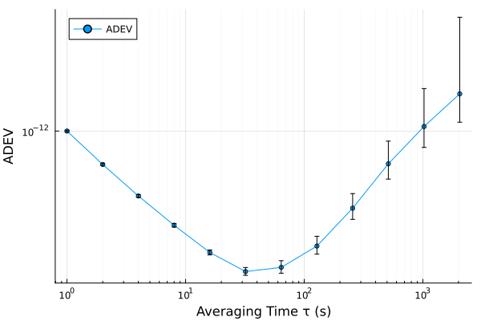
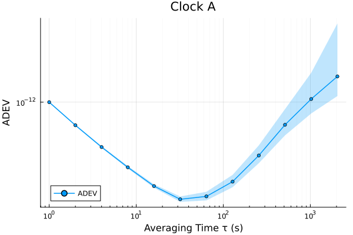
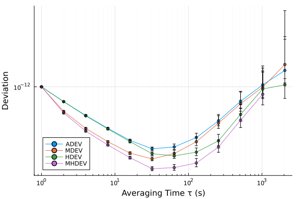
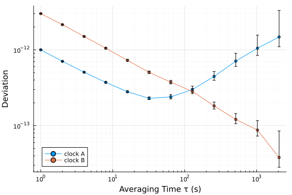
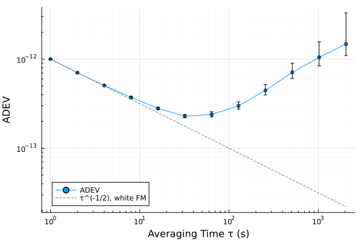
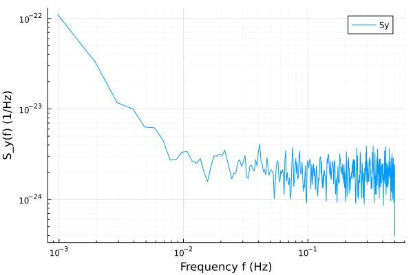
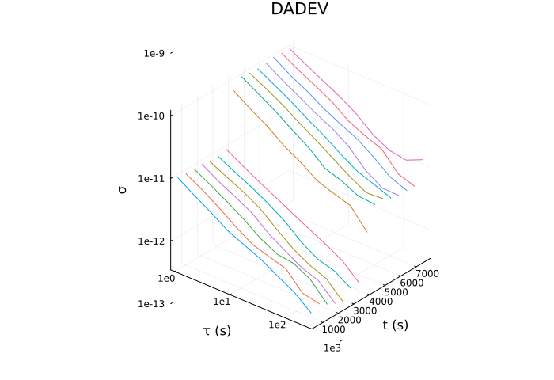
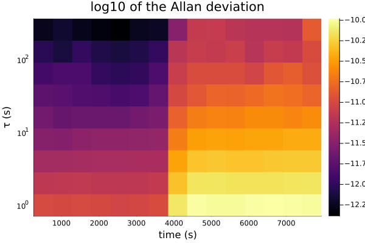

Plotting and tables
The package draws nothing itself. Its plot recipes load when Plots does, or any other package built on RecipesBase, and a result prints as a table and converts to one.
using SigmaTau, Plots, Random
# white FM of 1e-12 at 1 s and random-walk FM, 8192 samples at 1 s
p = noise_gen(PhaseData, 8192, 1.0; sigma1 = Dict(0 => 1e-12, -2 => 3e-14),
rng = Xoshiro(3))
r = adev(p)A deviation
plot(r) draws a StabilityResult on logarithmic axes, with a bar for the confidence interval at each averaging time:
plot(r)
The attributes of Plots apply as usual, and ci_band = true draws the interval as a band:
plot(r; ci_band = true, fillalpha = 0.25, lw = 1.5, title = "Clock A",
legend = :bottomleft)
The interval is the one the call computed: adev(p; confidence = 0.95) widens it and adev(p; ci = false) leaves it out. The limits are also vectors, ci_lower(r) and ci_upper(r). mtie and tierms have no interval and plot as plain curves.
Several curves
A StabilitySuite plots its deviations on one pair of axes:
plot(stability(p); legend = :bottomleft)
So does a vector of results, which is the way to compare clocks. label takes one name for each:
q = noise_gen(PhaseData, 8192, 1.0; sigma1 = Dict(0 => 3e-12), rng = Xoshiro(6))
plot([adev(p), adev(q)]; label = ["clock A" "clock B"], legend = :bottomleft)
plot!(adev(q)) adds a curve to a figure that exists. The time deviations (tdev, htdev, ttotdev) are in seconds, so give them axes of their own.
A reference line
The slope of a curve names the noise (Power-law noise has the table). A line of a given slope is an ordinary series, anchored here at the first point:
line = r.dev[1] .* (r.tau ./ r.tau[1]) .^ (-1/2)
plot(r; legend = :bottomleft)
plot!(r.tau, line; ls = :dash, color = :gray, label = "τ^(-1/2), white FM")
Spectra
psd_y, psd_x and ssb_phase_noise return a SpectralResult, which plots against a logarithmic frequency axis:
plot(psd_y(p))
$ℒ(f)$ from ssb_phase_noise(p; f_carrier = 10e6) is in dBc/Hz and gets a linear vertical axis.
Dynamic stability
dadev and dhdev return the deviation in a window that slides along the record. The plot is the one of SP1065 §5.2.20: a curve for each window, set out along a time axis. The record here is white FM whose level rises tenfold halfway through, which a deviation of the whole record would average over:
rng = Xoshiro(7)
y = [1e-11 .* randn(rng, 4096); 1e-10 .* randn(rng, 4096)]
d = dadev(FrequencyData(y, 1.0); window = 1024, step = 512)
plot(d; camera = (40, 30), xlabel = "τ (s)", ylabel = "t (s)", size = (700, 480))
camera turns the view, and the short axis labels keep clear of the tick labels. The result holds the map itself, d.dev, with a row for each window center in d.t and a column for each averaging time in d.tau, for any other picture of it:
heatmap(d.t, d.tau, log10.(d.dev'); yscale = :log10, xlabel = "time (s)",
ylabel = "τ (s)", title = "log10 of the Allan deviation")
Tables
A result prints as a table, one row for each averaging time:
adev(p, [1, 10, 100, 1000])StabilityResult(:adev, 4 pts, τ∈[1, 1000] s, with CI)
tau dev neff ci_lo ci_hi edf noise
1 9.998e-13 8190 9.911e-13 1.009e-12 6410 WHFM
10 3.39e-13 8172 3.321e-13 3.464e-13 1120 WHFM
100 2.715e-13 7992 2.517e-13 2.968e-13 74.39 RWFM
1000 1.036e-12 6192 8.342e-13 1.531e-12 6.073 RWFMA result or a suite is also a table in the sense of Tables.jl, with the columns deviation_type, tau, dev, noise_type, ci_lower, ci_upper, edf and neff. Any package that reads such tables takes one directly:
using DataFrames, CSV
df = DataFrame(r)
CSV.write("adev.csv", stability(p)) # one row for each deviation and τsave needs none of these packages. It writes a result or a suite as tab-separated text, with the settings of the call in comment lines, and load reads the file back.
Saving a figure
savefig takes the format from the extension. size is in pixels and dpi sets the resolution of a PNG, while PDF and SVG are vector formats:
fig = plot(r; ci_band = true, size = (800, 500), dpi = 300)
savefig(fig, "adev.png")
savefig(fig, "adev.pdf")